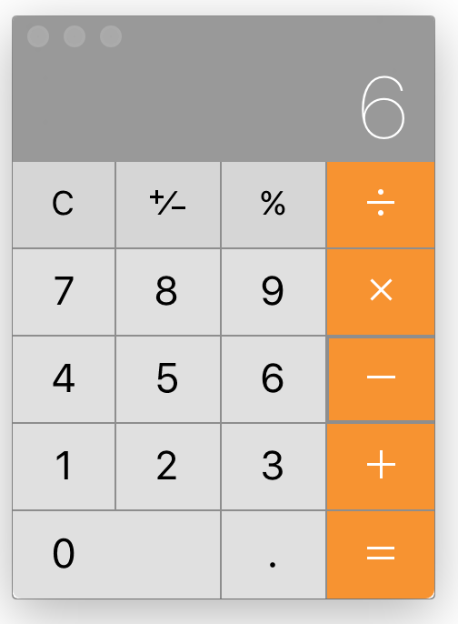
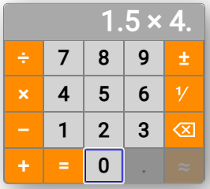

Designing an accessible calculator
A 2018 project to reimplement a popular calculator application on the web, with accessibility improvements.
Starting point
Compact electronic calculators came into existence in the early 1970s, and they have generally used buttons for the input of individual digits and operators. Calculator applications on devices with full keyboards have often used graphical interfaces emulating the original calculator appearance. For example, the Macintosh OS X Calculator, in basic mode, looks like this:

Examination of that application reveals some accessibility issues, such as:
- Truncated display. The application displays only the last term entered, relying on the user to remember what preceded it. For example, after the user enters
8 – 6
, the application displays only6
. A more accessible application would show the entire expression entered so far. - Disappearing focus indicator. The last digit pressed can be pressed again with the SPACE key, but the indicator identifying that digit disappears, so, to predict what the SPACE key will do, the user must remember which button was pressed last.
- Size constraint. The application has a fixed size, which the user cannot magnify.
- Error nonprevention. In any context, only some buttons are relevant, but the application leaves all of the buttons visually enabled, making it harder for the user to know which buttons are truly available for the next action.
- Missing error messages. If the user presses one of the irrelevant buttons, nothing happens, but the application does not tell the user why.
- Limited keyboard navigation. The typical navigation mode in a web interface, sequential focusing with the TAB key, is not available in the application.
- Limited correctability. When the user makes a mistake it an expression with multiple terms in it, the application permits deleting backwards to make corrections, but only within the last term and the last operator.
Design decisions
It is arguable that an accessible web-based calculator has no reason to look anything like the physical calculators that have been made since the 1970s. Perhaps they should be HTML forms with the most efficient input mechanisms for the terms and operators. The design problem may resemble that of faceted boolean searching for library resources. Such a design would permit users to make corrections anywhere in an entered string, not only backwards from the end.
The study project I undertook in 2018 ignored that possibility and retained the basic idea of a physical-like button-based appearance. Within that constraint, it sought to avoid some of the above-described accessibility problems.
Improvements in accessibility
The designed prototype incorporated the following accessibility improvements:
- Non-truncated display.
- Durable focus indicator.
- Magnifiability.
- Error prevention. Irrelevant buttons are disabled and dimmed.
- Navigability with the TAB key from button to button.
- Full-expression backward correctability.
Here is an example of the appearance of the application during use:
